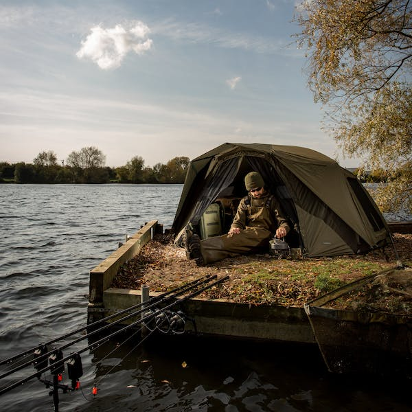
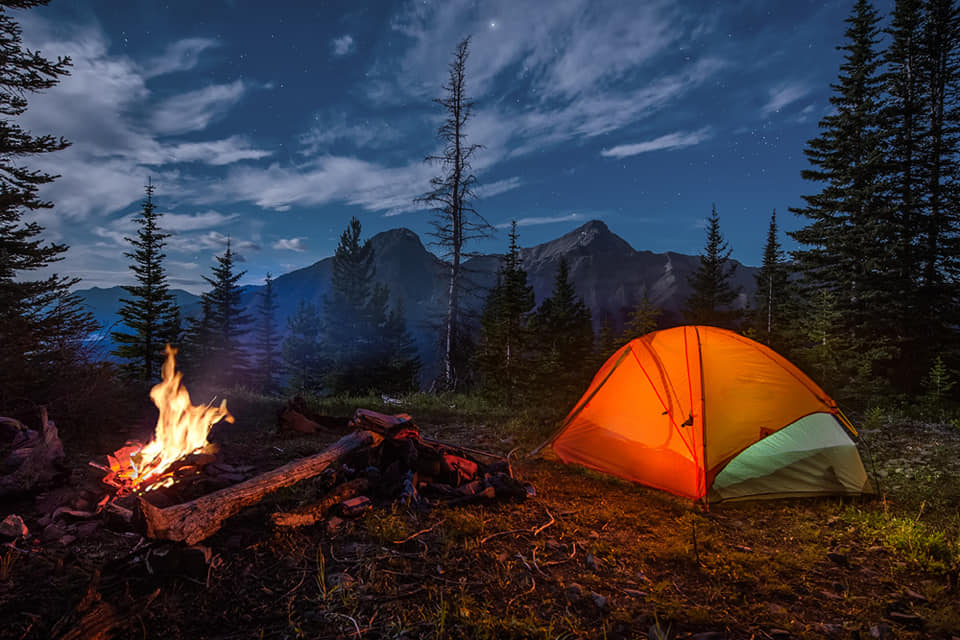
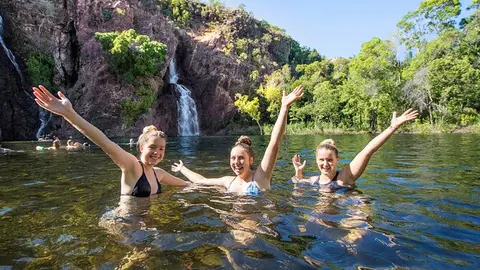
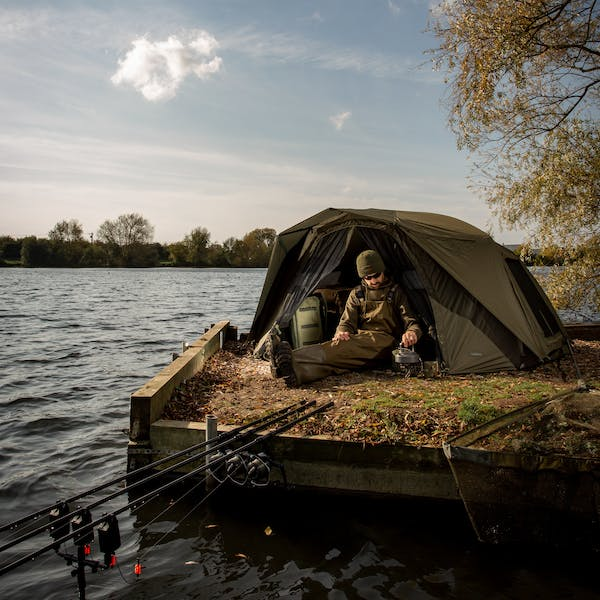
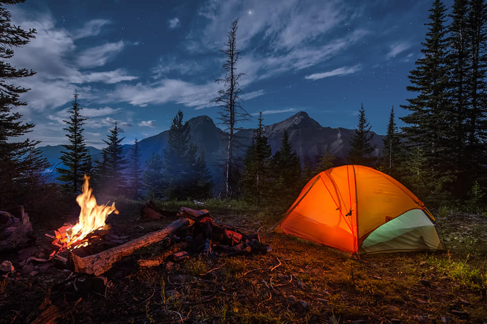
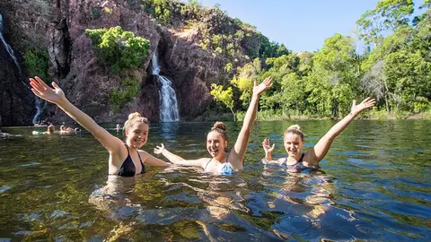

Experience Nature at its Best
Discover the beauty of our camping village nestled in the heart of nature.
Book NowDiscover the beauty of our camping village nestled in the heart of nature.
Book NowHet is met groot genoegen dat we u verwelkomen op Camping Village, gelegen in het prachtige en pittoreske Otterlo.
Wij streven ernaar om u een onvergetelijke ervaring te bieden te midden van de natuurlijke schoonheid en rust van onze camping.
In deze snel veranderende wereld begrijpen we de behoefte aan comfort, gemak en automatisering.
Daarom hebben we besloten om een webapplicatie te ontwikkelen om uw verblijf bij ons nog aangenamer te maken.
We zijn verheugd om samen te werken met Banana Media, een toonaangevend webontwikkelingsbedrijf, om deze webapplicatie te realiseren.
Met behulp van onze webapplicatie kunt u eenvoudig uw verblijf bij Camping Village plannen, accommodaties reserveren en toegang krijgen tot alle informatie die u nodig heeft. We begrijpen dat uw tijd kostbaar is en daarom hebben we ervoor gezorgd dat ons reserveringssysteem snel en intuïtief is, zodat u moeiteloos kunt boeken.
Naast het reserveren van accommodaties, biedt onze webapplicatie ook gedetailleerde informatie over onze faciliteiten en voorzieningen. U kunt de verschillende opties verkennen, zoals sanitaire voorzieningen, zwembaden, sportvelden en recreatieve activiteiten die we bieden. We streven ernaar om uw verblijf bij Camping Village zo aangenaam en ontspannen mogelijk te maken.
Bovendien stelt onze webapplicatie u in staat om uw reserveringen eenvoudig te beheren. U kunt wijzigingen aanbrengen in uw boeking, extra diensten toevoegen, zoals fietsverhuur of ontbijtservice, en met ons communiceren via het ingebouwde berichtensysteem.
We staan altijd klaar om uw vragen te beantwoorden, speciale verzoeken te honoreren en u te helpen tijdens uw verblijf.
Bij Camping Village streven we ernaar om een persoonlijke en gastvrije service te bieden. Ons team staat klaar om u te verwelkomen en ervoor te zorgen dat uw verblijf bij ons onvergetelijk wordt. We zijn trots op onze prachtige omgeving, en we willen graag dat u optimaal kunt genieten van de natuurlijke schoonheid en de vele activiteiten die Otterlo te bieden heeft.
Wij danken u voor uw vertrouwen in Camping Village en kijken ernaar uit u binnenkort te mogen verwelkomen.
 





Choose from a variety of comfortable lodging options:
Enjoy our top-notch facilities, including:
Participate in exciting activities such as:
Bij Camping Village bieden we een verscheidenheid aan comfortabele accommodaties waaruit u kunt kiezen: Cabins: Geniet van een gezellig verblijf in onze knusse hutten. Elke cabine is volledig uitgerust en biedt alle gemakken van thuis, te midden van de prachtige natuurlijke omgeving. Tents: Voor de avontuurlijke kampeerliefhebbers hebben we ruime tentplaatsen beschikbaar. Zet uw tent op en geniet van het gevoel van vrijheid terwijl u 's nachts de sterren bewondert. RV Sites: Als u met uw eigen camper reist, bieden onze RV-sites alle voorzieningen die u nodig heeft voor een comfortabel verblijf. Sluit uw camper aan op elektriciteit en water en geniet van het gemak van uw eigen mobiele huisje.
Op Camping Village kunt u genieten van eersteklas faciliteiten, waaronder: Zwembad: Neem een verfrissende duik in ons prachtige zwembad en geniet van de zon op de comfortabele ligstoelen bij het zwembad. Een perfecte manier om te ontspannen en af te koelen tijdens warme zomerdagen. Wandelpaden: Verken de prachtige omgeving van Otterlo met onze goed gemarkeerde wandelpaden. Ontdek de natuurlijke schoonheid, adembenemende uitzichten en misschien spot u zelfs wat wilde dieren tijdens uw wandeltochten. Kampvuurplaatsen: Creëer mooie herinneringen met uw dierbaren terwijl u rond het knisperende kampvuur zit. Geniet van gezelligheid, deel verhalen en maak nieuwe vriendschappen onder de sterrenhemel.
Bij Camping Village bieden we een scala aan spannende activiteiten die u kunt ondernemen: Kanovaren: Verken de nabijgelegen waterwegen en peddel in een kano. Geniet van de rust en de prachtige omgeving terwijl u door het kalme water glijdt. Vissen: Voor de liefhebbers van hengelsport bieden de nabijgelegen meren en rivieren volop mogelijkheden om te vissen. Werpt u uw hengel uit en geniet van de ontspanning van deze populaire activiteit. Outdoor Yoga: Verbind uw lichaam en geest te midden van de natuur met onze outdoor yogasessies. Laat stress los, verbeter uw flexibiliteit en kom volledig tot rust tijdens deze ontspannende en verkwikkende activiteit. Bij Camping Village streven we ernaar om u een onvergetelijke ervaring te bieden, waarbij u kunt genieten van comfortabele accommodaties, uitstekende faciliteiten en een scala aan leuke activiteiten. We kijken ernaar uit om u te verwelkomen en u te helpen de prachtige omgeving van Otterlo te verkennen.